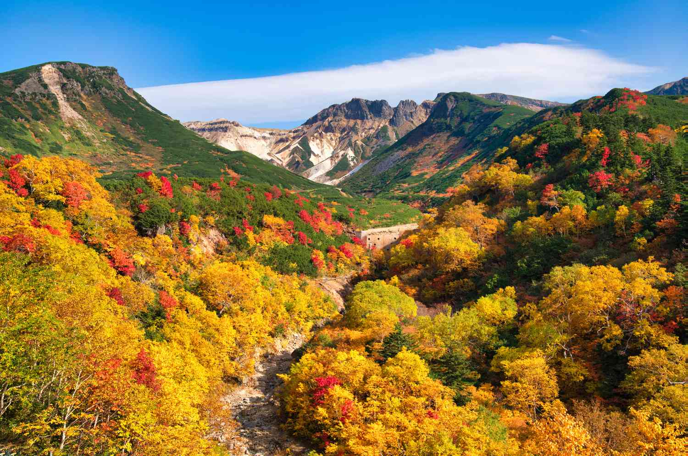
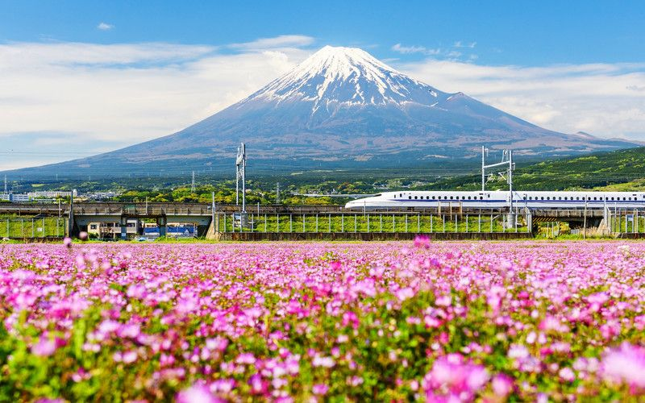
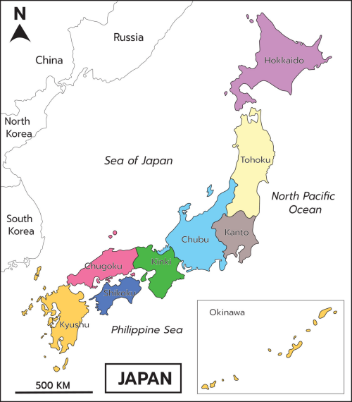
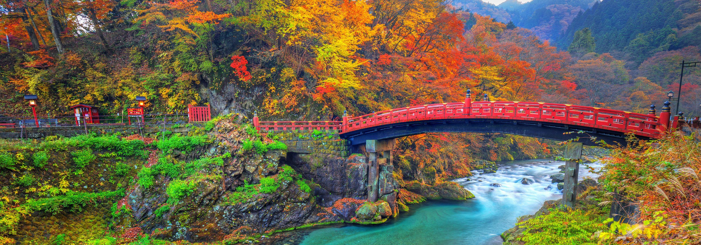

Japan is a land of true contrast. Rich with centuries-old tradition, the country has ancient, ornate temples and picturesque old towns standing alongside the dazzling lights and technical innovation of ultra-modern cities, like Tokyo in the Kanto region and Osaka. It's this unique blend of ancient and modern that is one of the main draws for visitors, who love to explore the modernity of city life while also experiencing countless natural wonders and learning about Japan's rich history. Then there's the cuisine, which needs no introduction. From hotpots to sushi and street food, Japanese food is celebrated around the world - but nothing beats an authentic bite.
There are a endless number of reasons to visit Japan, as the country has something to entice almost every kind of traveler. Whether you're dying to explore Japanese history in the Chugoku region such as the beautiful yet tragic regional capital of Hiroshima, explore culture at the variety of World Heritage Sites in the country, indulge in diverse Japanese cuisine, or experience a ride on the lighting-fast Shinkansen trains, a trip to Japan promises adventure around every corner. From the chance to visit some of the many impressive temples and castles around the country, to the opportunity to take a dip in an Onsen hot spring, there's no doubt we can curate the adventure of a lifetime for you!
Although Japan is perhaps best known internationally for its technologically advanced cities, the majority of the country is actually taken up by a vast expanse of forested hills and mountains, and there is lots of nature to explore. One of the most obvious beauty spots to visit is the iconic Mount Fuji, located in the Chubu region - truly a wonder to behold.

maybe a pic or two
videos or links to bullshit

Japan is an island nation, made up of four main islands: Hokkaido, Honshu, Shikoku, and Kyushu, as well as many thousands of smaller islands.
| Chugoku: 'middle country' home to Japans oldest shrine... | Kanto: the center of Japan's economy, a cultural treasure... | Chubu: A diverse, mountainous region of dreams... |
|---|

Will add info for all regions for UX, however only Chubu, Kanto, and Chugoku will be clickable as they lead to my groupmates pages.
Hover over a region to learn more info!!
| Spring | Summer | Autumn | Winter | |
| Weather Type | Rain, Sun | Sun, Hot | Warm, Windy | Cold, Snowy |
| Popular Festivities | Omizutori | Aoi Matsuri | Awa Odori | Chichibu Night Festival |
| Seasonal Foods | Bamboo shoots, Strawberries, Sakura sweets | Shaved ice, Eel, Watermelon | Mushrooms, Rice, Sweet Potato | Hotpots, Daikon Radish, Root Vegetables |
| Potential Detterants | Pollen Season | Humidity and Heat | Typhoon Season | Quiet and Chilly |
CS4012 HTML/CSS group project, Group 4
We chose the travel guide website as we can easily find reference online and there are clear pages each group member can be responsibe for. We decided that choosing one country to centre the project on is the best option for us, and then we could further narrow down regions for individual webpages.
We decided on one main webpage, and three of our favourite regions in Japan, as this allowed us to branch off and individually complete the requirements for this project
Each webpage is individually labelled 'main', '1', '2', and '3' for the corresponding pages, with corresponding css files to keep work clear and easily readable
We set up a cooperative word document to keep group notes, project requirements, and useful links on hand

26428733@studentmail.ul.ie Sarah Walsh, main page editor
26424932@studentmail.ul.ie Cian Portley, page 3 editor
26417693@studentmail.ul.ie Ash Ferreira, page 1 editor
write credits here thx
Sign up
sign up button/dropdown/form
input email
Let us know!
submission form
another potential column idea, links and referneces for project
work on this later :]